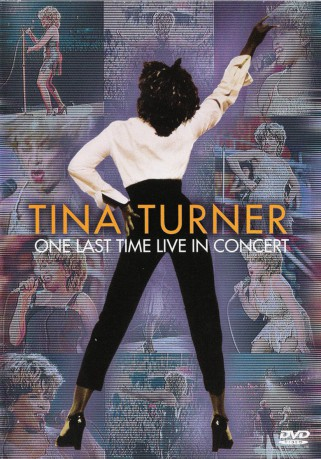

#5117 Tina Turner: One Last Time Live in Concert
 
 IMDB-Wertung: 9.0 / 10
IMDB-Wertung: 9.0 / 10  Metascore: 0
Metascore: 0 
Gefilmt im Wembley-Stadion während der "Twenty Four Seven Millennium Tour 2000". A state-of-the-art Bühnenbild, 18 Kameras, einer der weltweit führenden Direktoren (David Mallet), mit der üblichen starken Tina Turner Leistung kombiniert - machen dies ihre letzte UK Konzert, ein Ereignis, dass Sie nie vergessen werden.
Jahr: 2000
Dauer: 121 Minuten
FSK: 0
Land: England Studio: Edel Media & EntertainmentTonspuren:
Untertitel:
Auflösung: 720p (1280x720) Größe: 5580 MB
Genre: Musik, Dokumentation
Regisseur: David Mallet
Drehbuch: Will Fetters
Soundtrack:
Darsteller:
- Tina Turner als Herself
- Lisa Fischer als Singer / Dancer
 James Earl Jones als Announcer
James Earl Jones als Announcer- Ivona Brnelic als Dancer / Singer
- Clare Louise Turton als Dancer / Singer
- Solange Guenier als Dancer / Singer
- Jack Bruno als Musician, Drums
- Joel Campbell als Musician, Piano
- Stacy Campbell als Singer / Dancer
- Euge Groove als Musician, Saxophone, Keyboards, Percussion
- Ollie Marland als Musician, Keyboards
- Warren McRae als Musician, Bass Guitar
- John Miles als Musician, Guitar, Harmonica, Vocals
- James Ralston als Musician, Guitar
Datei: X:\Musik\Tina Turner One Last Time Live in Concert (2000, FSK0, 1280x720).mkv seit 23.12.2016
Festplatte: HD Serien(SU-Z)+Dokus+Musik
 Es gibt insgesamt 134 Filme in der Gruppe 'Musik'
Es gibt insgesamt 134 Filme in der Gruppe 'Musik'